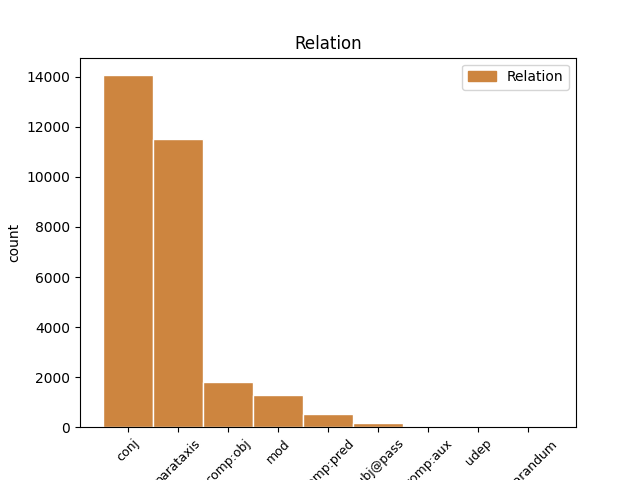
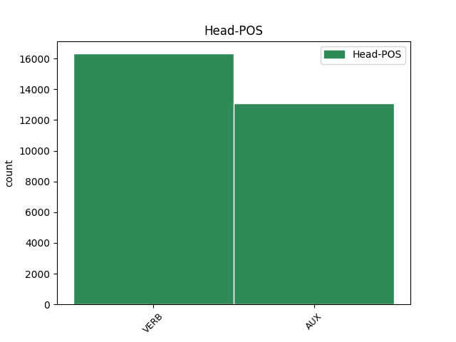
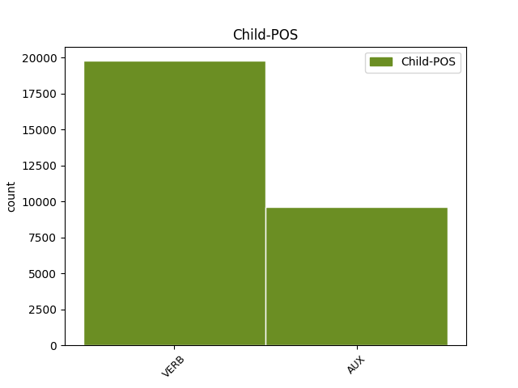

Distribution of features within this leaf



Agreement Rules sorted by frequency.
- When the dependent token is the conjunct(conj) of the head token, and the dependent token is VERB.
1 Andere _ _ _ _ 0 _ _ _
2 sehen sehen VERB VVFIN Mood=Ind|Number=Plur|Person=3|Tense=Pres|VerbForm=Fin 0 _ _ _
3 in _ _ _ _ 0 _ _ _
4 diesem _ _ _ _ 0 _ _ _
5 Pilz _ _ _ _ 0 _ _ _
6 aber _ _ _ _ 0 _ _ _
7 eine _ _ _ _ 0 _ _ _
8 Bedrohung _ _ _ _ 0 _ _ _
9 , _ _ _ _ 0 _ _ _
10 denn _ _ _ _ 0 _ _ _
11 durch _ _ _ _ 0 _ _ _
12 die _ _ _ _ 0 _ _ _
13 Zersetzung _ _ _ _ 0 _ _ _
14 des _ _ _ _ 0 _ _ _
15 Polycarbonats _ _ _ _ 0 _ _ _
16 leidet leiden VERB VVFIN Mood=Ind|Number=Sing|Person=3|Tense=Pres|VerbForm=Fin 2 conj _ _
17 natürlich _ _ _ _ 0 _ _ _
18 auch _ _ _ _ 0 _ _ _
19 die _ _ _ _ 0 _ _ _
20 datentragende _ _ _ _ 0 _ _ _
21 Schicht _ _ _ _ 0 _ _ _
22 der _ _ _ _ 0 _ _ _
23 CD _ _ _ _ 0 _ _ _
24 . _ _ _ _ 0 _ _ _
1 Erste _ _ _ _ 0 _ _ _
2 Prototypen _ _ _ _ 0 _ _ _
3 der _ _ _ _ 0 _ _ _
4 150-GByte-CD _ _ _ _ 0 _ _ _
5 und _ _ _ _ 0 _ _ _
6 entsprechender _ _ _ _ 0 _ _ _
7 Laufwerke _ _ _ _ 0 _ _ _
8 seien sein AUX VAFIN Mood=Ind|Number=Plur|Person=3|Tense=Pres|VerbForm=Fin 0 _ _ _
9 zwar _ _ _ _ 0 _ _ _
10 im _ _ _ _ 0 _ _ _
11 Labor _ _ _ _ 0 _ _ _
12 bereits _ _ _ _ 0 _ _ _
13 funktionsfähig _ _ _ _ 0 _ _ _
14 , _ _ _ _ 0 _ _ _
15 sollen sollen AUX VMFIN Mood=Ind|Number=Plur|Person=3|Tense=Pres|VerbForm=Fin|VerbType=Mod 8 conj _ _
16 aber _ _ _ _ 0 _ _ _
17 nicht _ _ _ _ 0 _ _ _
18 präsentiert _ _ _ _ 0 _ _ _
19 werden _ _ _ _ 0 _ _ _
20 , _ _ _ _ 0 _ _ _
21 erläuterte _ _ _ _ 0 _ _ _
22 Susanna _ _ _ _ 0 _ _ _
23 Orlic _ _ _ _ 0 _ _ _
24 von _ _ _ _ 0 _ _ _
25 der _ _ _ _ 0 _ _ _
26 TU _ _ _ _ 0 _ _ _
27 Berlin _ _ _ _ 0 _ _ _
28 gegenüber _ _ _ _ 0 _ _ _
29 heise _ _ _ _ 0 _ _ _
30 online _ _ _ _ 0 _ _ _
31 . _ _ _ _ 0 _ _ _
1 Version _ _ _ _ 0 _ _ _
2 2.0 _ _ _ _ 0 _ _ _
3 überholt überholen VERB VVFIN Mood=Ind|Number=Sing|Person=3|Tense=Pres|VerbForm=Fin 0 _ _ _
4 dann _ _ _ _ 0 _ _ _
5 mit _ _ _ _ 0 _ _ _
6 angepeilten _ _ _ _ 0 _ _ _
7 480 _ _ _ _ 0 _ _ _
8 MBit _ _ _ _ 0 _ _ _
9 pro _ _ _ _ 0 _ _ _
10 Sekunde _ _ _ _ 0 _ _ _
11 sogar _ _ _ _ 0 _ _ _
12 Apples _ _ _ _ 0 _ _ _
13 FireWire-Standard _ _ _ _ 0 _ _ _
14 ( _ _ _ _ 0 _ _ _
15 alias _ _ _ _ 0 _ _ _
16 IEEE _ _ _ _ 0 _ _ _
17 1394 _ _ _ _ 0 _ _ _
18 ) _ _ _ _ 0 _ _ _
19 - _ _ _ _ 0 _ _ _
20 Insider _ _ _ _ 0 _ _ _
21 vermuten vermuten VERB VVFIN Mood=Ind|Number=Plur|Person=3|Tense=Pres|VerbForm=Fin 3 parataxis _ _
22 , _ _ _ _ 0 _ _ _
23 dass _ _ _ _ 0 _ _ _
24 der _ _ _ _ 0 _ _ _
25 Computerlieferant _ _ _ _ 0 _ _ _
26 aus _ _ _ _ 0 _ _ _
27 Cupertino _ _ _ _ 0 _ _ _
28 deshalb _ _ _ _ 0 _ _ _
29 noch _ _ _ _ 0 _ _ _
30 keine _ _ _ _ 0 _ _ _
31 eigenen _ _ _ _ 0 _ _ _
32 Pläne _ _ _ _ 0 _ _ _
33 zur _ _ _ _ 0 _ _ _
34 Unterstützung _ _ _ _ 0 _ _ _
35 des _ _ _ _ 0 _ _ _
36 USB-2.0-Standards _ _ _ _ 0 _ _ _
37 bekannt _ _ _ _ 0 _ _ _
38 gegeben _ _ _ _ 0 _ _ _
39 hat _ _ _ _ 0 _ _ _
40 . _ _ _ _ 0 _ _ _
1 Die _ _ _ _ 0 _ _ _
2 ersten _ _ _ _ 0 _ _ _
3 externen _ _ _ _ 0 _ _ _
4 Laufwerke _ _ _ _ 0 _ _ _
5 kommen kommen VERB VVFIN Mood=Ind|Number=Plur|Person=3|Tense=Pres|VerbForm=Fin 0 _ _ _
6 beispielsweise _ _ _ _ 0 _ _ _
7 von _ _ _ _ 0 _ _ _
8 der _ _ _ _ 0 _ _ _
9 Firma _ _ _ _ 0 _ _ _
10 QPS _ _ _ _ 0 _ _ _
11 Inc. _ _ _ _ 0 _ _ _
12 Die _ _ _ _ 0 _ _ _
13 Geräte _ _ _ _ 0 _ _ _
14 der _ _ _ _ 0 _ _ _
15 QPS-Que!-Reihe _ _ _ _ 0 _ _ _
16 sind sein AUX VAFIN Mood=Ind|Number=Plur|Person=3|Tense=Pres|VerbForm=Fin 5 parataxis _ _
17 mit _ _ _ _ 0 _ _ _
18 CD-RW-Brenner _ _ _ _ 0 _ _ _
19 , _ _ _ _ 0 _ _ _
20 DVD-RAM-Laufwerk _ _ _ _ 0 _ _ _
21 oder _ _ _ _ 0 _ _ _
22 als _ _ _ _ 0 _ _ _
23 sogenanntes _ _ _ _ 0 _ _ _
24 M3 _ _ _ _ 0 _ _ _
25 Dual _ _ _ _ 0 _ _ _
26 Drive _ _ _ _ 0 _ _ _
27 , _ _ _ _ 0 _ _ _
28 das _ _ _ _ 0 _ _ _
29 Festplatte _ _ _ _ 0 _ _ _
30 und _ _ _ _ 0 _ _ _
31 CD-ROM-Laufwerk _ _ _ _ 0 _ _ _
32 in _ _ _ _ 0 _ _ _
33 einem _ _ _ _ 0 _ _ _
34 Gerät _ _ _ _ 0 _ _ _
35 integriert _ _ _ _ 0 _ _ _
36 , _ _ _ _ 0 _ _ _
37 erhältlich _ _ _ _ 0 _ _ _
38 . _ _ _ _ 0 _ _ _
1 Napster-Anwender _ _ _ _ 0 _ _ _
2 beteuern beteuern VERB VVFIN Mood=Ind|Number=Plur|Person=3|Tense=Pres|VerbForm=Fin 0 _ _ _
3 , _ _ _ _ 0 _ _ _
4 ihr _ _ _ _ 0 _ _ _
5 Kaufverhalten _ _ _ _ 0 _ _ _
6 habe haben AUX VAFIN Mood=Ind|Number=Sing|Person=3|Tense=Pres|VerbForm=Fin 2 comp:obj _ _
7 sich _ _ _ _ 0 _ _ _
8 durch _ _ _ _ 0 _ _ _
9 die _ _ _ _ 0 _ _ _
10 Online-Tauschbörse _ _ _ _ 0 _ _ _
11 kaum _ _ _ _ 0 _ _ _
12 geändert _ _ _ _ 0 _ _ _
13 und _ _ _ _ 0 _ _ _
14 werden _ _ _ _ 0 _ _ _
15 dabei _ _ _ _ 0 _ _ _
16 sogar _ _ _ _ 0 _ _ _
17 teilweise _ _ _ _ 0 _ _ _
18 durch _ _ _ _ 0 _ _ _
19 Studien _ _ _ _ 0 _ _ _
20 der _ _ _ _ 0 _ _ _
21 Musikindustrie _ _ _ _ 0 _ _ _
22 gedeckt _ _ _ _ 0 _ _ _
23 . _ _ _ _ 0 _ _ _
1 Die _ _ _ _ 0 _ _ _
2 Studie _ _ _ _ 0 _ _ _
3 liefert _ _ _ _ 0 _ _ _
4 Informationen _ _ _ _ 0 _ _ _
5 über _ _ _ _ 0 _ _ _
6 die _ _ _ _ 0 _ _ _
7 politische _ _ _ _ 0 _ _ _
8 Haltung _ _ _ _ 0 _ _ _
9 einzelner _ _ _ _ 0 _ _ _
10 Länder _ _ _ _ 0 _ _ _
11 zum _ _ _ _ 0 _ _ _
12 Thema _ _ _ _ 0 _ _ _
13 Verschlüsselung _ _ _ _ 0 _ _ _
14 und _ _ _ _ 0 _ _ _
15 bewertet bewerten VERB VVFIN Mood=Ind|Number=Sing|Person=3|Tense=Pres|VerbForm=Fin 0 _ _ _
16 die _ _ _ _ 0 _ _ _
17 Ergebnisse _ _ _ _ 0 _ _ _
18 in _ _ _ _ 0 _ _ _
19 drei _ _ _ _ 0 _ _ _
20 Stufen _ _ _ _ 0 _ _ _
21 , _ _ _ _ 0 _ _ _
22 wobei _ _ _ _ 0 _ _ _
23 die _ _ _ _ 0 _ _ _
24 Sicherheit _ _ _ _ 0 _ _ _
25 der _ _ _ _ 0 _ _ _
26 Daten _ _ _ _ 0 _ _ _
27 im _ _ _ _ 0 _ _ _
28 Vordergrund _ _ _ _ 0 _ _ _
29 steht stehen VERB VVFIN Mood=Ind|Number=Sing|Person=3|Tense=Pres|VerbForm=Fin 15 mod _ _
30 . _ _ _ _ 0 _ _ _
1 Dadurch _ _ _ _ 0 _ _ _
2 liefert liefern VERB VVFIN Mood=Ind|Number=Sing|Person=3|Tense=Pres|VerbForm=Fin 0 _ _ _
3 das _ _ _ _ 0 _ _ _
4 Format _ _ _ _ 0 _ _ _
5 eine _ _ _ _ 0 _ _ _
6 wesentlich _ _ _ _ 0 _ _ _
7 bessere _ _ _ _ 0 _ _ _
8 Bildqualität _ _ _ _ 0 _ _ _
9 , _ _ _ _ 0 _ _ _
10 was _ _ _ _ 0 _ _ _
11 es _ _ _ _ 0 _ _ _
12 zum _ _ _ _ 0 _ _ _
13 Standard _ _ _ _ 0 _ _ _
14 in _ _ _ _ 0 _ _ _
15 der _ _ _ _ 0 _ _ _
16 professionellen _ _ _ _ 0 _ _ _
17 Videobearbeitung _ _ _ _ 0 _ _ _
18 gemacht _ _ _ _ 0 _ _ _
19 hat haben AUX VAFIN Mood=Ind|Number=Sing|Person=3|Tense=Pres|VerbForm=Fin 2 mod _ _
20 . _ _ _ _ 0 _ _ _
1 Die _ _ _ _ 0 _ _ _
2 Protestierer _ _ _ _ 0 _ _ _
3 teilten teilen VERB VVFIN Mood=Ind|Number=Plur|Person=3|Tense=Past|VerbForm=Fin 0 _ _ _
4 mit _ _ _ _ 0 _ _ _
5 , _ _ _ _ 0 _ _ _
6 sie _ _ _ _ 0 _ _ _
7 begrüßten begrüßen VERB VVFIN Mood=Ind|Number=Plur|Person=3|Tense=Past|VerbForm=Fin 3 comp:obj _ _
8 diesen _ _ _ _ 0 _ _ _
9 Schritt _ _ _ _ 0 _ _ _
10 und _ _ _ _ 0 _ _ _
11 hofften _ _ _ _ 0 _ _ _
12 , _ _ _ _ 0 _ _ _
13 damit _ _ _ _ 0 _ _ _
14 den _ _ _ _ 0 _ _ _
15 Grundstein _ _ _ _ 0 _ _ _
16 einer _ _ _ _ 0 _ _ _
17 lang _ _ _ _ 0 _ _ _
18 anhaltenden _ _ _ _ 0 _ _ _
19 Beziehung _ _ _ _ 0 _ _ _
20 zu _ _ _ _ 0 _ _ _
21 Apple _ _ _ _ 0 _ _ _
22 zu _ _ _ _ 0 _ _ _
23 legen _ _ _ _ 0 _ _ _
24 . _ _ _ _ 0 _ _ _
1 Fällt fallen VERB VVFIN Mood=Ind|Number=Sing|Person=3|Tense=Pres|VerbForm=Fin 5 comp:pred _ _
2 er _ _ _ _ 0 _ _ _
3 durch _ _ _ _ 0 _ _ _
4 , _ _ _ _ 0 _ _ _
5 gibt geben VERB VVFIN Mood=Ind|Number=Sing|Person=3|Tense=Pres|VerbForm=Fin 0 _ _ _
6 's _ _ _ _ 0 _ _ _
7 auch _ _ _ _ 0 _ _ _
8 keinen _ _ _ _ 0 _ _ _
9 Preis _ _ _ _ 0 _ _ _
10 . _ _ _ _ 0 _ _ _
1 Je _ _ _ _ 0 _ _ _
2 mehr _ _ _ _ 0 _ _ _
3 der _ _ _ _ 0 _ _ _
4 jährlich _ _ _ _ 0 _ _ _
5 rund _ _ _ _ 0 _ _ _
6 80 _ _ _ _ 0 _ _ _
7 Millionen _ _ _ _ 0 _ _ _
8 Amtsgänge _ _ _ _ 0 _ _ _
9 in _ _ _ _ 0 _ _ _
10 Regierungsbehörden _ _ _ _ 0 _ _ _
11 , _ _ _ _ 0 _ _ _
12 bei _ _ _ _ 0 _ _ _
13 denen _ _ _ _ 0 _ _ _
14 rund _ _ _ _ 0 _ _ _
15 125 _ _ _ _ 0 _ _ _
16 Milliarden _ _ _ _ 0 _ _ _
17 US-Dollar _ _ _ _ 0 _ _ _
18 verschoben _ _ _ _ 0 _ _ _
19 werden _ _ _ _ 0 _ _ _
20 , _ _ _ _ 0 _ _ _
21 ins _ _ _ _ 0 _ _ _
22 Netz _ _ _ _ 0 _ _ _
23 verlagert _ _ _ _ 0 _ _ _
24 werden _ _ _ _ 0 _ _ _
25 können können AUX VMFIN Mood=Ind|Number=Plur|Person=3|Tense=Pres|VerbForm=Fin|VerbType=Mod 32 comp:pred _ _
26 , _ _ _ _ 0 _ _ _
27 desto _ _ _ _ 0 _ _ _
28 größer _ _ _ _ 0 _ _ _
29 die _ _ _ _ 0 _ _ _
30 Kostenersparnis _ _ _ _ 0 _ _ _
31 , _ _ _ _ 0 _ _ _
32 hofft hoffen VERB VVFIN Mood=Ind|Number=Sing|Person=3|Tense=Pres|VerbForm=Fin 0 _ _ _
33 die _ _ _ _ 0 _ _ _
34 Regierung _ _ _ _ 0 _ _ _
35 . _ _ _ _ 0 _ _ _
1 " _ _ _ _ 0 _ _ _
2 Waffen- _ _ _ _ 0 _ _ _
3 und _ _ _ _ 0 _ _ _
4 Organhandel _ _ _ _ 0 _ _ _
5 ist _ _ _ _ 0 _ _ _
6 in _ _ _ _ 0 _ _ _
7 den _ _ _ _ 0 _ _ _
8 USA _ _ _ _ 0 _ _ _
9 nicht _ _ _ _ 0 _ _ _
10 prinzipiell _ _ _ _ 0 _ _ _
11 verboten _ _ _ _ 0 _ _ _
12 , _ _ _ _ 0 _ _ _
13 und _ _ _ _ 0 _ _ _
14 was _ _ _ _ 0 _ _ _
15 legal _ _ _ _ 0 _ _ _
16 gehandelt _ _ _ _ 0 _ _ _
17 wird werden AUX VAFIN Mood=Ind|Number=Sing|Person=3|Tense=Pres|VerbForm=Fin 19 subj@pass _ _
18 , _ _ _ _ 0 _ _ _
19 darf dürfen AUX VMFIN Mood=Ind|Number=Sing|Person=3|Tense=Pres|VerbForm=Fin|VerbType=Mod 0 _ _ _
20 nicht _ _ _ _ 0 _ _ _
21 einfach _ _ _ _ 0 _ _ _
22 aus _ _ _ _ 0 _ _ _
23 dem _ _ _ _ 0 _ _ _
24 Auktionsangebot _ _ _ _ 0 _ _ _
25 gelöscht _ _ _ _ 0 _ _ _
26 werden _ _ _ _ 0 _ _ _
27 " _ _ _ _ 0 _ _ _
28 , _ _ _ _ 0 _ _ _
29 sagte _ _ _ _ 0 _ _ _
30 Oliver _ _ _ _ 0 _ _ _
31 Samwer _ _ _ _ 0 _ _ _
32 von _ _ _ _ 0 _ _ _
33 eBay-Deutschland _ _ _ _ 0 _ _ _
34 auf _ _ _ _ 0 _ _ _
35 Nachfrage _ _ _ _ 0 _ _ _
36 von _ _ _ _ 0 _ _ _
37 c't _ _ _ _ 0 _ _ _
38 . _ _ _ _ 0 _ _ _
1 Wer _ _ _ _ 0 _ _ _
2 im _ _ _ _ 0 _ _ _
3 Internet _ _ _ _ 0 _ _ _
4 die _ _ _ _ 0 _ _ _
5 Auktionsplattform _ _ _ _ 0 _ _ _
6 eHammer.de _ _ _ _ 0 _ _ _
7 ansteuert ansteuern VERB VVFIN Mood=Ind|Number=Sing|Person=3|Tense=Pres|VerbForm=Fin 9 subj@pass _ _
8 , _ _ _ _ 0 _ _ _
9 wird werden AUX VAFIN Mood=Ind|Number=Sing|Person=3|Tense=Pres|VerbForm=Fin 0 _ _ _
10 dort _ _ _ _ 0 _ _ _
11 von _ _ _ _ 0 _ _ _
12 der _ _ _ _ 0 _ _ _
13 Mitteilung _ _ _ _ 0 _ _ _
14 empfangen _ _ _ _ 0 _ _ _
15 , _ _ _ _ 0 _ _ _
16 dass _ _ _ _ 0 _ _ _
17 die _ _ _ _ 0 _ _ _
18 Firma _ _ _ _ 0 _ _ _
19 am _ _ _ _ 0 _ _ _
20 Ende _ _ _ _ 0 _ _ _
21 ist _ _ _ _ 0 _ _ _
22 . _ _ _ _ 0 _ _ _
1 Jetzt _ _ _ _ 0 _ _ _
2 sieht sehen VERB VVFIN Mood=Ind|Number=Sing|Person=3|Tense=Pres|VerbForm=Fin 0 _ _ _
3 es _ _ _ _ 0 _ _ _
4 so _ _ _ _ 0 _ _ _
5 aus _ _ _ _ 0 _ _ _
6 , _ _ _ _ 0 _ _ _
7 als _ _ _ _ 0 _ _ _
8 wolle wollen AUX VMFIN Mood=Ind|Number=Sing|Person=3|Tense=Pres|VerbForm=Fin|VerbType=Mod 2 udep _ _
9 Sun _ _ _ _ 0 _ _ _
10 Microsystems _ _ _ _ 0 _ _ _
11 ganz _ _ _ _ 0 _ _ _
12 darauf _ _ _ _ 0 _ _ _
13 verzichten _ _ _ _ 0 _ _ _
14 , _ _ _ _ 0 _ _ _
15 Java _ _ _ _ 0 _ _ _
16 selbst _ _ _ _ 0 _ _ _
17 den _ _ _ _ 0 _ _ _
18 ISO-Gremien _ _ _ _ 0 _ _ _
19 vorzulegen _ _ _ _ 0 _ _ _
20 . _ _ _ _ 0 _ _ _
1 Eine _ _ _ _ 0 _ _ _
2 Megafusion _ _ _ _ 0 _ _ _
3 könne können AUX VMFIN Mood=Ind|Number=Sing|Person=3|Tense=Pres|VerbForm=Fin|VerbType=Mod 0 _ _ _
4 mit _ _ _ _ 0 _ _ _
5 diesen _ _ _ _ 0 _ _ _
6 Aktien _ _ _ _ 0 _ _ _
7 , _ _ _ _ 0 _ _ _
8 die _ _ _ _ 0 _ _ _
9 rund _ _ _ _ 0 _ _ _
10 die _ _ _ _ 0 _ _ _
11 Hälfte _ _ _ _ 0 _ _ _
12 des _ _ _ _ 0 _ _ _
13 Börsenwertes _ _ _ _ 0 _ _ _
14 des _ _ _ _ 0 _ _ _
15 Unternehmens _ _ _ _ 0 _ _ _
16 ausmachten _ _ _ _ 0 _ _ _
17 , _ _ _ _ 0 _ _ _
18 finanziert _ _ _ _ 0 _ _ _
19 werden werden AUX VAFIN Mood=Ind|Number=Plur|Person=3|Tense=Pres|VerbForm=Fin 3 comp:aux _ _
20 , _ _ _ _ 0 _ _ _
21 unterstrich _ _ _ _ 0 _ _ _
22 Sommer _ _ _ _ 0 _ _ _
23 . _ _ _ _ 0 _ _ _
1 Wie _ _ _ _ 0 _ _ _
2 der _ _ _ _ 0 _ _ _
3 Verband _ _ _ _ 0 _ _ _
4 der _ _ _ _ 0 _ _ _
5 Internet-Startups _ _ _ _ 0 _ _ _
6 heißen heißen VERB VVFIN Mood=Ind|Number=Plur|Person=1|Tense=Pres|VerbForm=Fin 12 comp:aux _ _
7 und _ _ _ _ 0 _ _ _
8 welche _ _ _ _ 0 _ _ _
9 Rechtsform _ _ _ _ 0 _ _ _
10 er _ _ _ _ 0 _ _ _
11 haben _ _ _ _ 0 _ _ _
12 soll sollen AUX VMFIN Mood=Ind|Number=Sing|Person=3|Tense=Pres|VerbForm=Fin|VerbType=Mod 0 _ _ _
13 , _ _ _ _ 0 _ _ _
14 darüber _ _ _ _ 0 _ _ _
15 ist _ _ _ _ 0 _ _ _
16 noch _ _ _ _ 0 _ _ _
17 nicht _ _ _ _ 0 _ _ _
18 entschieden _ _ _ _ 0 _ _ _
19 . _ _ _ _ 0 _ _ _
1 Auch _ _ _ _ 0 _ _ _
2 wenn _ _ _ _ 0 _ _ _
3 die _ _ _ _ 0 _ _ _
4 von _ _ _ _ 0 _ _ _
5 ihm _ _ _ _ 0 _ _ _
6 angebotenen _ _ _ _ 0 _ _ _
7 Top _ _ _ _ 0 _ _ _
8 Level _ _ _ _ 0 _ _ _
9 Domains _ _ _ _ 0 _ _ _
10 nicht _ _ _ _ 0 _ _ _
11 von _ _ _ _ 0 _ _ _
12 jedem _ _ _ _ 0 _ _ _
13 Internet-Nutzer _ _ _ _ 0 _ _ _
14 in _ _ _ _ 0 _ _ _
15 der _ _ _ _ 0 _ _ _
16 Welt _ _ _ _ 0 _ _ _
17 ohne _ _ _ _ 0 _ _ _
18 Erweiterung _ _ _ _ 0 _ _ _
19 verwendet _ _ _ _ 0 _ _ _
20 werden _ _ _ _ 0 _ _ _
21 könnten _ _ _ _ 0 _ _ _
22 , _ _ _ _ 0 _ _ _
23 so _ _ _ _ 0 _ _ _
24 sei sein AUX VAFIN Mood=Ind|Number=Sing|Person=3|Tense=Pres|VerbForm=Fin 25 reparandum _ _
25 werde werden AUX VAFIN Mood=Ind|Number=Sing|Person=3|Tense=Pres|VerbForm=Fin 0 _ _ _
26 doch _ _ _ _ 0 _ _ _
27 ein _ _ _ _ 0 _ _ _
28 relativ _ _ _ _ 0 _ _ _
29 großer _ _ _ _ 0 _ _ _
30 Kreis _ _ _ _ 0 _ _ _
31 angesprochen _ _ _ _ 0 _ _ _
32 . _ _ _ _ 0 _ _ _
1 Nach _ _ _ _ 0 _ _ _
2 erste _ _ _ _ 0 _ _ _
3 Ergebnissen _ _ _ _ 0 _ _ _
4 , _ _ _ _ 0 _ _ _
5 die _ _ _ _ 0 _ _ _
6 von _ _ _ _ 0 _ _ _
7 den _ _ _ _ 0 _ _ _
8 europäischen _ _ _ _ 0 _ _ _
9 Wettbewerbshütern _ _ _ _ 0 _ _ _
10 anfang anfangen VERB VVFIN Mood=Ind|Number=Sing|Person=1|Tense=Pres|VerbForm=Fin 19 udep _ _
11 der _ _ _ _ 0 _ _ _
12 Woche _ _ _ _ 0 _ _ _
13 in _ _ _ _ 0 _ _ _
14 einem _ _ _ _ 0 _ _ _
15 Entscheidungsentwuf _ _ _ _ 0 _ _ _
16 festgehalten _ _ _ _ 0 _ _ _
17 worden _ _ _ _ 0 _ _ _
18 sein _ _ _ _ 0 _ _ _
19 sollen sollen AUX VMFIN Mood=Ind|Number=Plur|Person=3|Tense=Pres|VerbForm=Fin|VerbType=Mod 0 _ _ _
20 , _ _ _ _ 0 _ _ _
21 musste _ _ _ _ 0 _ _ _
22 Microsoft _ _ _ _ 0 _ _ _
23 davon _ _ _ _ 0 _ _ _
24 ausgehen _ _ _ _ 0 _ _ _
25 , _ _ _ _ 0 _ _ _
26 dass _ _ _ _ 0 _ _ _
27 die _ _ _ _ 0 _ _ _
28 Beteilung _ _ _ _ 0 _ _ _
29 an _ _ _ _ 0 _ _ _
30 Telewest _ _ _ _ 0 _ _ _
31 durch _ _ _ _ 0 _ _ _
32 die _ _ _ _ 0 _ _ _
33 Kartellexperten _ _ _ _ 0 _ _ _
34 verboten _ _ _ _ 0 _ _ _
35 würde _ _ _ _ 0 _ _ _
36 . _ _ _ _ 0 _ _ _
Disagree Examples:
1 Über _ _ _ _ 0 _ _ _
2 die _ _ _ _ 0 _ _ _
3 Gründe _ _ _ _ 0 _ _ _
4 der _ _ _ _ 0 _ _ _
5 Insolvenz _ _ _ _ 0 _ _ _
6 konnte können AUX VMFIN Mood=Ind|Number=Sing|Person=3|Tense=Past|VerbForm=Fin|VerbType=Mod 0 _ _ _
7 Unternehmenssprecher _ _ _ _ 0 _ _ _
8 Johannes _ _ _ _ 0 _ _ _
9 Lenz-Hawliczek _ _ _ _ 0 _ _ _
10 noch _ _ _ _ 0 _ _ _
11 nichts _ _ _ _ 0 _ _ _
12 sagen _ _ _ _ 0 _ _ _
13 , _ _ _ _ 0 _ _ _
14 kündigte kündigen VERB VVFIN Mood=Ind|Number=Sing|Person=3|Tense=Pres|VerbForm=Fin 6 conj _ _
15 jedoch _ _ _ _ 0 _ _ _
16 die _ _ _ _ 0 _ _ _
17 Bekanntgabe _ _ _ _ 0 _ _ _
18 weiterer _ _ _ _ 0 _ _ _
19 Details _ _ _ _ 0 _ _ _
20 für _ _ _ _ 0 _ _ _
21 die _ _ _ _ 0 _ _ _
22 Mitte _ _ _ _ 0 _ _ _
23 dieser _ _ _ _ 0 _ _ _
24 Woche _ _ _ _ 0 _ _ _
25 an _ _ _ _ 0 _ _ _
26 . _ _ _ _ 0 _ _ _
1 Das _ _ _ _ 0 _ _ _
2 Papier _ _ _ _ 0 _ _ _
3 verlor verlieren VERB VVFIN Mood=Ind|Number=Sing|Person=3|Tense=Past|VerbForm=Fin 0 _ _ _
4 heute _ _ _ _ 0 _ _ _
5 zehn _ _ _ _ 0 _ _ _
6 Prozent _ _ _ _ 0 _ _ _
7 an _ _ _ _ 0 _ _ _
8 Wert _ _ _ _ 0 _ _ _
9 und _ _ _ _ 0 _ _ _
10 sackte sacken VERB VVFIN Mood=Ind|Number=Sing|Person=3|Tense=Pres|VerbForm=Fin 3 conj _ _
11 mit _ _ _ _ 0 _ _ _
12 knapp _ _ _ _ 0 _ _ _
13 unter _ _ _ _ 0 _ _ _
14 29 _ _ _ _ 0 _ _ _
15 Euro _ _ _ _ 0 _ _ _
16 auf _ _ _ _ 0 _ _ _
17 den _ _ _ _ 0 _ _ _
18 tiefsten _ _ _ _ 0 _ _ _
19 Stand _ _ _ _ 0 _ _ _
20 seit _ _ _ _ 0 _ _ _
21 zwei _ _ _ _ 0 _ _ _
22 Jahren _ _ _ _ 0 _ _ _
23 . _ _ _ _ 0 _ _ _
1 Zur _ _ _ _ 0 _ _ _
2 Anzahl _ _ _ _ 0 _ _ _
3 der _ _ _ _ 0 _ _ _
4 Betroffenen _ _ _ _ 0 _ _ _
5 konnte können AUX VMFIN Mood=Ind|Number=Sing|Person=3|Tense=Past|VerbForm=Fin|VerbType=Mod 0 _ _ _
6 Freenet-Sprecherin _ _ _ _ 0 _ _ _
7 Elke _ _ _ _ 0 _ _ _
8 Rüter _ _ _ _ 0 _ _ _
9 nichts _ _ _ _ 0 _ _ _
10 sagen _ _ _ _ 0 _ _ _
11 , _ _ _ _ 0 _ _ _
12 es _ _ _ _ 0 _ _ _
13 hätten haben AUX VAFIN Mood=Ind|Number=Plur|Person=3|Tense=Pres|VerbForm=Fin 5 conj _ _
14 sich _ _ _ _ 0 _ _ _
15 jedoch _ _ _ _ 0 _ _ _
16 insgesamt _ _ _ _ 0 _ _ _
17 höchstens _ _ _ _ 0 _ _ _
18 tausend _ _ _ _ 0 _ _ _
19 Personen _ _ _ _ 0 _ _ _
20 eingetragen _ _ _ _ 0 _ _ _
21 . _ _ _ _ 0 _ _ _
1 Eine _ _ _ _ 0 _ _ _
2 Sprecherin _ _ _ _ 0 _ _ _
3 des _ _ _ _ 0 _ _ _
4 Bundesjustizministeriums _ _ _ _ 0 _ _ _
5 erklärte erklären VERB VVFIN Mood=Ind|Number=Sing|Person=3|Tense=Past|VerbForm=Fin 0 _ _ _
6 gegenüber _ _ _ _ 0 _ _ _
7 c't _ _ _ _ 0 _ _ _
8 , _ _ _ _ 0 _ _ _
9 der _ _ _ _ 0 _ _ _
10 Bericht _ _ _ _ 0 _ _ _
11 sei sein AUX VAFIN Mood=Ind|Number=Sing|Person=3|Tense=Pres|VerbForm=Fin 5 comp:obj _ _
12 vom _ _ _ _ 0 _ _ _
13 Bundeskabinett _ _ _ _ 0 _ _ _
14 verabschiedet _ _ _ _ 0 _ _ _
15 und _ _ _ _ 0 _ _ _
16 dem _ _ _ _ 0 _ _ _
17 Bundestag _ _ _ _ 0 _ _ _
18 bereits _ _ _ _ 0 _ _ _
19 zugeleitet _ _ _ _ 0 _ _ _
20 worden _ _ _ _ 0 _ _ _
21 ; _ _ _ _ 0 _ _ _
22 nach _ _ _ _ 0 _ _ _
23 ihren _ _ _ _ 0 _ _ _
24 Angaben _ _ _ _ 0 _ _ _
25 soll _ _ _ _ 0 _ _ _
26 die _ _ _ _ 0 _ _ _
27 verabschiedete _ _ _ _ 0 _ _ _
28 Fassung _ _ _ _ 0 _ _ _
29 des _ _ _ _ 0 _ _ _
30 Berichts _ _ _ _ 0 _ _ _
31 in _ _ _ _ 0 _ _ _
32 der _ _ _ _ 0 _ _ _
33 nächsten _ _ _ _ 0 _ _ _
34 Woche _ _ _ _ 0 _ _ _
35 veröffentlicht _ _ _ _ 0 _ _ _
36 werden _ _ _ _ 0 _ _ _
37 . _ _ _ _ 0 _ _ _
1 Eine _ _ _ _ 0 _ _ _
2 Sprecherin _ _ _ _ 0 _ _ _
3 des _ _ _ _ 0 _ _ _
4 Bundesjustizministeriums _ _ _ _ 0 _ _ _
5 erklärte erklären VERB VVFIN Mood=Ind|Number=Sing|Person=3|Tense=Past|VerbForm=Fin 0 _ _ _
6 gegenüber _ _ _ _ 0 _ _ _
7 c't _ _ _ _ 0 _ _ _
8 , _ _ _ _ 0 _ _ _
9 der _ _ _ _ 0 _ _ _
10 Bericht _ _ _ _ 0 _ _ _
11 sei _ _ _ _ 0 _ _ _
12 vom _ _ _ _ 0 _ _ _
13 Bundeskabinett _ _ _ _ 0 _ _ _
14 verabschiedet _ _ _ _ 0 _ _ _
15 und _ _ _ _ 0 _ _ _
16 dem _ _ _ _ 0 _ _ _
17 Bundestag _ _ _ _ 0 _ _ _
18 bereits _ _ _ _ 0 _ _ _
19 zugeleitet _ _ _ _ 0 _ _ _
20 worden _ _ _ _ 0 _ _ _
21 ; _ _ _ _ 0 _ _ _
22 nach _ _ _ _ 0 _ _ _
23 ihren _ _ _ _ 0 _ _ _
24 Angaben _ _ _ _ 0 _ _ _
25 soll sollen AUX VMFIN Mood=Ind|Number=Sing|Person=3|Tense=Pres|VerbForm=Fin|VerbType=Mod 5 parataxis _ _
26 die _ _ _ _ 0 _ _ _
27 verabschiedete _ _ _ _ 0 _ _ _
28 Fassung _ _ _ _ 0 _ _ _
29 des _ _ _ _ 0 _ _ _
30 Berichts _ _ _ _ 0 _ _ _
31 in _ _ _ _ 0 _ _ _
32 der _ _ _ _ 0 _ _ _
33 nächsten _ _ _ _ 0 _ _ _
34 Woche _ _ _ _ 0 _ _ _
35 veröffentlicht _ _ _ _ 0 _ _ _
36 werden _ _ _ _ 0 _ _ _
37 . _ _ _ _ 0 _ _ _